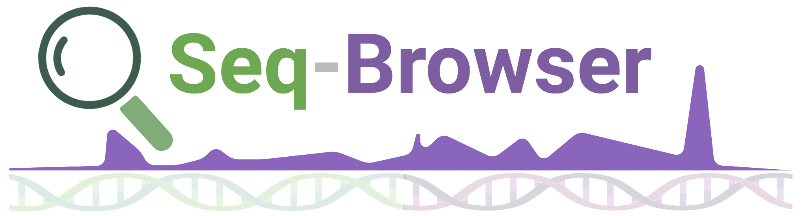

| Method | Readouts | Resolution | Year |
|---|
Using an LLM? Point it at the Markdown masterlist (the whole database in one file) or methods.json. Also: CSV, llms.txt.

A curated, continuously updated catalogue of sequencing-based assays.
| Method | Readouts | Resolution | Year |
|---|